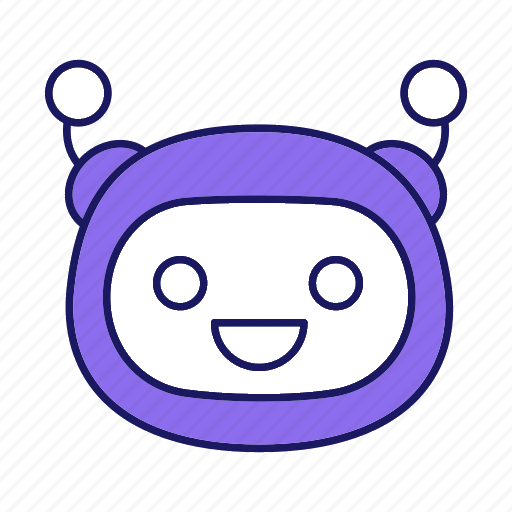

<ion-header class="ion-no-border">
	<ion-toolbar class="with-back-button">
    <ion-avatar class="mx-auto">
      
    </ion-avatar>
		<ion-buttons slot="start">
			<ion-back-button defaultHref="/side-menu/tabs/home"></ion-back-button>
		</ion-buttons>
	</ion-toolbar>
</ion-header>

<ion-content>
  <div class="flex flex-col gap-y-3">
    <ng-container *ngFor="let message of dummyMessages">
      <bubble-chat [message]="message"></bubble-chat>
    </ng-container>
  </div>
</ion-content>

<ion-footer>
  <ion-toolbar>
    <div class="bg-primary flex items-center gap-x-2 p-3">
      <ion-textarea [(ngModel)]="messageText" class="bg-gray-100 flex-grow rounded-3xl border-2 border-primary m-0 focus:outline-none" inputmode="text" placeholder="Ketik sesuatu atau ketik 'Bantuan'" rows="1" autoGrow></ion-textarea>
      <ion-icon name="send" class="text-white" (click)="onSendMessage()"></ion-icon>
    </div>
  </ion-toolbar>
</ion-footer>
